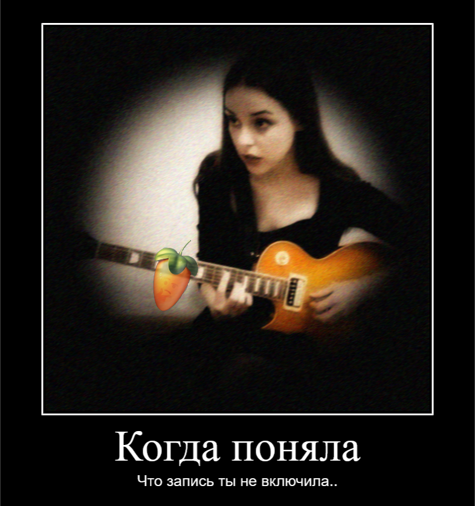
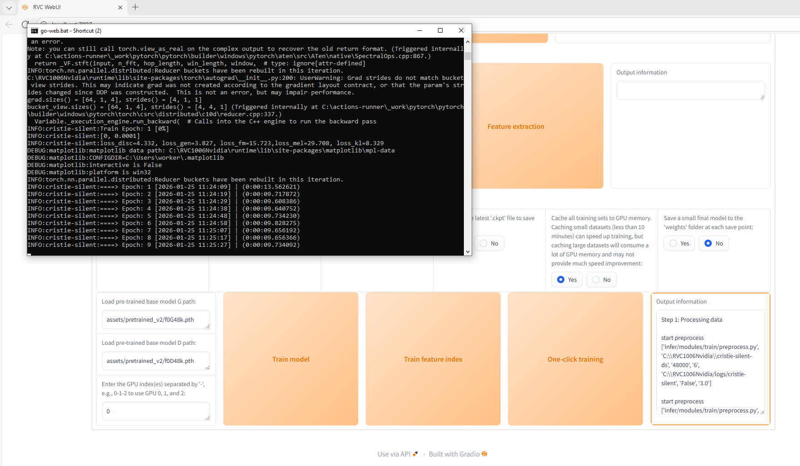
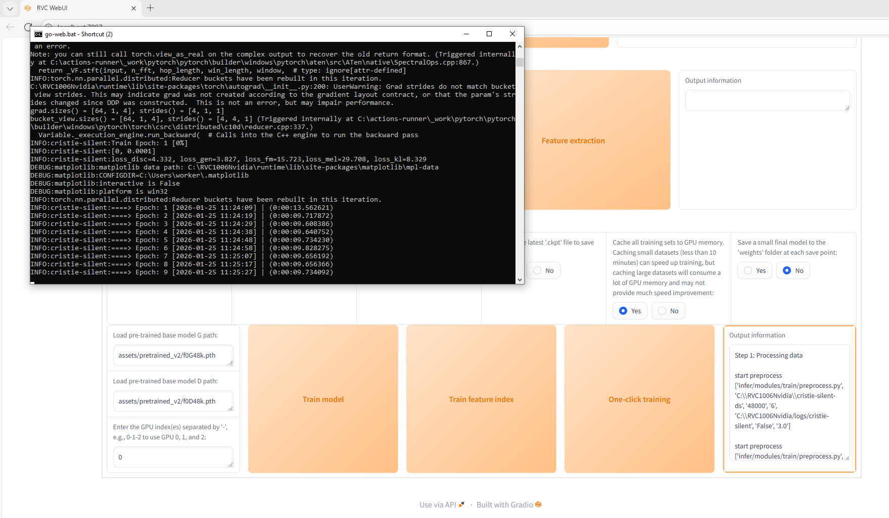

How Do I Create Music?
Author - Cristie
Shall We Begin Our Journey?
Hello, my dear listener!
Let's talk about sound?
Actually, this article isn't just about sound and how I create music; it's about the process, the story, the thoughts, the philosophy.
Where to start?
Let's start with what begins any sound, or rather what comes before it.
It's an idea. Every track is my thoughts, emotions, an attempt to convey them, to unload them from myself and record them into music, by any means.
Here begins our jumping between styles. I don't want to limit myself; there's chaos in my head in terms of ideas, so I jump from trip-hop to industrial, dubstep, and just pop music. It's the same with lyrics. I love unloading emotions, and I end up with melancholic tracks, but I also love drive and thrash, so tracks like "Corpses" and "Pennywise" are born. And I also love exploring and describing the world, art, so tracks like "Underground Love" are born. These are all very different prisms inside me. I don't have release plans, and I don't even know what my music will be like tomorrow. I do as I feel, and this creates a problem.
I Can't Wait
For me, taking a long time to create a track is pure agony. When I have an idea, I want to implement it, so I resort to different tools to speed up the music creation process. But more on that below. Let's talk a bit more about sound.
I like combining the incompatible, trying to do impossible things. Sometimes I intentionally complicate the process.
For example, in my music, old, live tube guitar sound and synthesized saxophone are combined, and for me, that's normal. The same with vocals. I like to enhance and change them; my processes are constantly updated because I find new life hacks.
Alright, the beginning got a bit long. Let's move on to the process and what I actually do?
Now I'll tell you my process: how I make samples, how I glue them, how I train vocals on RVC and why I have several different models, how I use DAW, how analog equipment fits into all this, how I create background sounds, how I cut tracks, and so on.
It all starts with a melody. There are many options here. What do I usually use? Voice, humming a melody, or laying down tracks in a DAW, typically drums and piano. It could also be guitar. I don't make a full composition; I make rough sketches because my goal next is to turn them into loops using AI. At this stage, I get something like this:
0:00
0:00
0:00
0:00
DAW and AI
Which plugins do I use and which DAW?
My DAW is FL Studio.
My main plugins are:
Izotope Ozone - I use for mastering
Izotope RX - I use for removing vocal artifacts, clicks, etc.
Supertone Clean - for cleaning vocals from noise
Vital - for waves
Izotope Vinyl - for retro sound
Built-in FL plugins - Limiter, Pitcher, Fruity Parametric EQ 2, Fruity Reverb 2
Then I take these drafts and start extending them through AI. I get different variations of the sound, can change the tempo, style. For loops, I use Suno. I take the best options through stems and then cut them into loops. Here I get variations like these:
0:00
0:00
0:00
0:00
Analog Sound


 Creating loops doesn't end here. I really love analog sound.
So I record guitar separately on my equipment. Currently, it's a tube preamp AMT-SS-20, Flashback from TC Electronic, and a phaser from MXR. There's also a modded Crybaby from Dunlop (I love soldering), and of course, my Les Paul.
I have 8 guitar pedals in total, two of which are analog loopers and 1 tube amplifier.
I record all this through minifuse1; it's enough for now. Recently, I've also been using an electric bow, and in the end, I get loops like these:
Creating loops doesn't end here. I really love analog sound.
So I record guitar separately on my equipment. Currently, it's a tube preamp AMT-SS-20, Flashback from TC Electronic, and a phaser from MXR. There's also a modded Crybaby from Dunlop (I love soldering), and of course, my Les Paul.
I have 8 guitar pedals in total, two of which are analog loopers and 1 tube amplifier.
I record all this through minifuse1; it's enough for now. Recently, I've also been using an electric bow, and in the end, I get loops like these:
0:00
0:00
0:00
0:00
0:00
0:00
0:00
0:00
0:00
0:00
0:00
0:00
0:00
0:00
Background Sounds
Creating sounds and melodies doesn't end here. I create background sounds.
For this, I also use AI. What kind of background sounds? I like to use various ones, for example: crying, screaming, the sound of breaking bones, hissing, clocks, various scary sounds.
The TangoFlux model helps me here. Here are examples of sounds I use:
The model also allows me to create non-human sounds that, for example, might cause anxiety (impressionable listeners, don't listen!!!):
And of course, this gives me freedom in creating sounds and mixing them.
0:00
0:00
0:00
0:00
0:00
0:00
0:00
0:00
0:00
0:00
0:00
0:00
Vocals or What is RVC?

Now the most important thing: how do I experiment with vocals?
It's clear that the whole process starts with lyrics and the idea behind them.
My music has many references; I filter my thoughts and philosophy through it.
So for me, these aren't just random tracks - it's my lore.
Therefore, the vocal task, like the idea of coming to this method, became the most important for me.
You probably noticed that my persona in the tracks is multifaceted, while I myself am faceless.
I like this paradox, so when creating vocals, I decided that the voice should be different. For me, voice is an instrument, and if mine isn't perfect, I can fix it. And here RVC comes on stage.
RVC is Retrieval-based Voice Conversion Artificial Intelligence.
I train RVC on my vocal takes. During training, RVC studies the timbre of the voice and all its technical nuances, so I have many RVC models, for example, they are trained on:
screams, lyrical singing, just screams, only English, only Russian.
But I don't just train the model. In fact, I never stop the training process.
I continue training or retrain and merge model checkpoints. This way, I enrich the model each time with, let's say, ideal data in my opinion.
Yes, this leads to a change in vocal timbre; sometimes its character changes - but I accept that.
Why? Because I understand that in real life, I can't perfect my voice to that extent (I wrote about the reasons earlier).

Here's the model creation formula:
First, I train the model on a dataset from 5 to 15 minutes; I split each recording into micro-samples of 3 seconds. I train for at least 200 epochs, then I check intermediate results and choose the best checkpoint. I have a base model with my pure voice - I call this model my vocal DNA. I take a new model and merge its checkpoint with my vocal checkpoint. Then I repeat this process until I get the result I like. So the formula is simple: my voice + an ideal variation of my voice = the result I need for a particular track or style. Do I improve the voice further? Yes. Sometimes I need to get vocal variations, and mega-ideal ones. Here I use a persona in Suno, created based on my vocals. I feed it a rough version, then do a remix or cover with this persona, export the vocals, and cut out the pieces I need, just like loops. Then, when training a new model, I mix in these pieces to enhance the vocals. Thus, for me, RVC is a very custom amplifier of my voice. That's why the vocals can sound different in the tracks.
Let's look at an example of some draft models:
To understand the power of this tool, we'll take vocals from the barrel:
Now run it through a model trained on screams:
Now run it through another model (lyrical):
Now run it through another model (more positive vocals):
Now run it through another model (averaged model):
And here's the final version (after cleaning, removing artifacts, and applying DAW plugins):
And to not be unfounded - here's the model checkpoint and its index - you can try it -
Model
Index
Why am I not afraid to post it? We live in a world of digital technology; let's be honest - anyone can copy our voice. And to truly understand how cool RVC is, here's a model trained on Donald Duck:
Of course, RVC is not the endpoint; it's just a converter.
And it's not perfect; it adds flaws, so I polish everything in the DAW.
Also, when working with vocals, I might use Suno's Editor.
Why? To fix a vocal flaw from RVC through a persona (it's faster than retraining the model and trying again).

Here's the model creation formula:
First, I train the model on a dataset from 5 to 15 minutes; I split each recording into micro-samples of 3 seconds. I train for at least 200 epochs, then I check intermediate results and choose the best checkpoint. I have a base model with my pure voice - I call this model my vocal DNA. I take a new model and merge its checkpoint with my vocal checkpoint. Then I repeat this process until I get the result I like. So the formula is simple: my voice + an ideal variation of my voice = the result I need for a particular track or style. Do I improve the voice further? Yes. Sometimes I need to get vocal variations, and mega-ideal ones. Here I use a persona in Suno, created based on my vocals. I feed it a rough version, then do a remix or cover with this persona, export the vocals, and cut out the pieces I need, just like loops. Then, when training a new model, I mix in these pieces to enhance the vocals. Thus, for me, RVC is a very custom amplifier of my voice. That's why the vocals can sound different in the tracks.
Let's look at an example of some draft models:
To understand the power of this tool, we'll take vocals from the barrel:
0:00
0:00
Now run it through a model trained on screams:
0:00
0:00
Now run it through another model (lyrical):
0:00
0:00
Now run it through another model (more positive vocals):
0:00
0:00
Now run it through another model (averaged model):
0:00
0:00
And here's the final version (after cleaning, removing artifacts, and applying DAW plugins):
0:00
0:00
Why am I not afraid to post it? We live in a world of digital technology; let's be honest - anyone can copy our voice. And to truly understand how cool RVC is, here's a model trained on Donald Duck:
0:00
0:00
Final Chord
At the final stage, I take the resulting instrumental, assembled from loops, and make remixes in Suno to get variations. Then I either choose a suitable version or get several, separate them into tracks, and polish them in the DAW.
Ultimately, I use a mix of myself, technology, and good old analog sound. Everything as I love it: a cocktail of the incompatible.
Is this good or bad?
I don't know; it's just my path and perspective.
I believe the future lies in the hybrid of human and AI.
So I will continue to experiment with these processes.
After all, if I managed to embed a piece of soul and emotion through the prism of a bunch of zeros and ones, why not? And this doesn't negate that inside all this, it's still me.